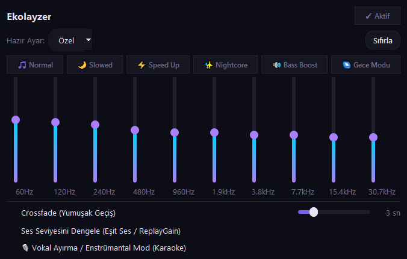
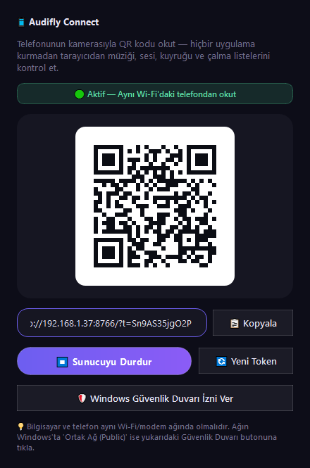
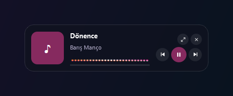
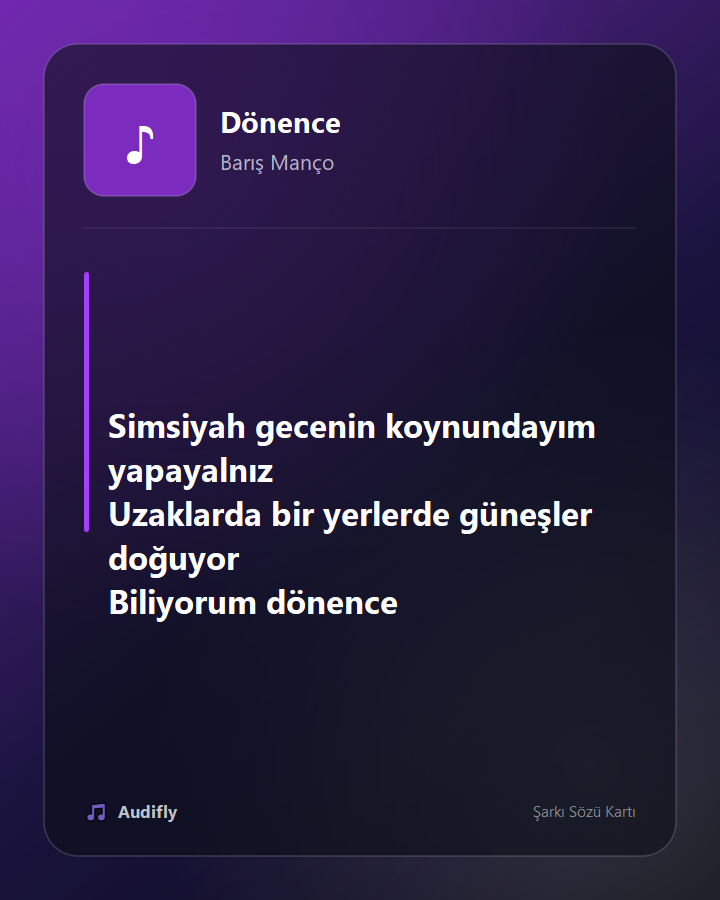

Audifly Connect — QR Kodlu Telefon Kumandası
Telefonundan QR kodu okut; hiçbir uygulama indirmeden tarayıcıdan albüm kapağını gör, şarkı değiştir, sesi ayarla, kuyruğu ve tüm çalma listelerini koltuktan yönet.
YouTube ve Spotify listelerini tek yerde topla; çevrimdışı dinle, tek tıkla Slowed / Speed Up / Nightcore yap, telefonundan QR ile yönet ve arkadaşlarınla aynı anda dinle.
Doğrudan Audifly Qt uygulamasından alınan gerçek arayüz görüntüleri — büyütmek için tıklayabilirsin.




Aşağıdaki canlı Web Audio demosunu başlat ve modlar arasında geçerek tempo + EQ farkını anında duy.
Hafif, hızlı ve dinleme keyfi için takıntılı derecede incelikle tasarlandı.
Telefonundan QR kodu okut; hiçbir uygulama indirmeden tarayıcıdan albüm kapağını gör, şarkı değiştir, sesi ayarla, kuyruğu ve tüm çalma listelerini koltuktan yönet.
Herhangi bir şarkıyı canlı olarak Slowed, Speed Up, Nightcore, Bass Boost veya komşu dostu Gece Modu'nda dinle.
Rainmeter tarzı süzülen cam masaüstü widget'ı (ana pencereyi gizler) ve oyun oynarken ekran köşesinde beliren minimal Gaming HUD.
Senkronize tam ekran Karaoke, tek tıkla Vokal Ayırıcı (Enstrümantal) ve sevdiğin sözleri Discord / WhatsApp / Story için estetik PNG kart olarak kopyalama.
Arkadaşlarınla şifreli oda kur; ortak şarkı kuyruğu, canlı sohbet, emoji tepkileri ve milisaniye hassasiyetinde senkronize müzik keyfi.
Spotify, YouTube, M3U ve yerel MP3/FLAC dosyalarını içe aktar; çevrimdışı indir. Kütüphane Parlatıcı ile (Official Video), [4K], - Topic çöplerini tek tıkla temizle.
Yukarıdaki Windows için İndir butonuna tıkla. VLC ses motoru ve FFmpeg paketle birlikte gelir — ek bir şey kurman gerekmez.
İlk açılışta şifre oluşturmak zorunda değilsin: ⚡ Hesapsız Hızlı Başla'ya tıkla ve anında müziğe geç.
Herkese açık Spotify veya YouTube listelerini doğrudan yapıştır, çevrimdışı indir ya da Keşfet'ten yeni parçalar bul.
Evet. Audifly %100 açık kaynak kodludur; reklam, abonelik veya veri toplama içermez. Tüm çalma listelerin ve ayarların yalnızca kendi bilgisayarında saklanır.
Açık kaynak bağımsız uygulamalar ücretli dijital imza sertifikası olmadan paketlendiği için Windows ilk çalıştırmada uyarı gösterebilir. "Ek bilgi → Yine de çalıştır" diyerek güvenle kurabilir veya kaynak kodu GitHub'dan inceleyebilirsin.
Hayır! Herkese açık (public) tüm Spotify çalma listelerini hiçbir API anahtarı veya giriş yapmadan doğrudan linkini yapıştırarak aktarabilirsin.
Uygulamadaki 📱 telefon ikonuna tıkladığında bilgisayarında yerel bir Wi-Fi kumanda sayfası açılır. Telefonunla QR kodu okutman yeterli; bilgisayar ve telefon aynı Wi-Fi/modem ağında olmalıdır.